|
|
|
|
| Les secteurs
d'activités |
|
|
|
|
|
|
|
|
|
|
Le plastique
est le deuxième matériau utilisé par
l'industrie française de l'emballage, en chiffres d'affaires
avec 4.724 milliards
d'€, et le 3ème
matériau d'emballage en tonnage avec 1 800 KT
(données 2001).
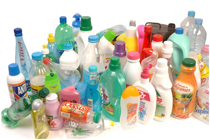 |
Le
Plastique est présent dans tous les secteurs :
agroalimentaire,
hygiène, santé, beauté, parfumerie,
produits d'entretien, industrie
(chimie, phytosanitaire, peinture…), commerce et
distribution,
transport.
Ainsi, dans l'agro-alimentaire et la cosmétique, l'emballage
plastique protège et respecte l'hygiène.
Il
s'adapte aux différents modes de distribution des produits
ainsi qu'aux
conditionnements à haute cadence nécessaires aux
produits de grande
consommation.
Il sait être résistant, étanche,
économique et supporte de grands écarts de
température.
|
Dans le
domaine de la santé, les emballages plastiques
répondent aux contraintes réglementaires
très exigeantes notamment dans le secteur pharmaceutique et
médical (inertie, stérilisation,
imperméabilité…).
Mais
c'est bien dans le secteur de la beauté que l'emballage
plastique
a acquis ses lettres de noblesse puisqu'on le retrouve en
cosmétique et
en parfumerie où il a su allier des critères
techniques (résistance aux
chocs, résistance chimique) aux critères
esthétiques (couleur,
transparence, forme…) et plus récemment aux
critères sensoriels (aspect
et toucher). |
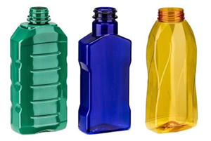 |
|
|
|
|
|
Le secteur du
Bâtiment représente 1,3 millions de tonnes
soit 23% de
la totalité des matières plastiques produites en
France.
Le PVC est la matière la plus utilisée avec 39% du total.
Le chiffre d'affaires de la Profession se monte à 7 milliards d'€
soit environ 10% du
chiffre d'affaires total du Bâtiment.
Le secteur emploie plus de 4000
personnes (données 2002).
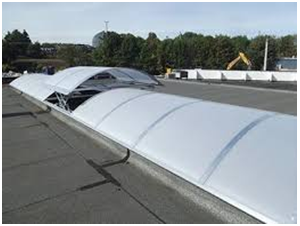 |
Si les
plastiques sont de plus en plus intégrés aux
projets de
construction, c'est pour leur excellence fonctionnelle :
résistance,
durabilité, isolation…
On les retrouve ainsi de plus en plus
en couverture (exemples
: verrières, voûtes translucides)
où ils sont
très appréciés pour leur transparence,
leur souplesse et leur facilité
de manutention.
|
| Egalement
dans les façades avec les " peaux composites " qui
constituent une nouvelle génération d'enveloppe
architecturale avec des
capacités visuelles variant à la
lumière, des aspects de surfaces de
couleur permettant une parfaite intégration dans le paysage. |
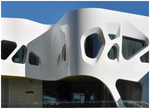 |
Les principales applications sont :
- le transfert des fluides,
- la couverture et le bardage,
- l'étanchéité,
- dans les ouvertures : une fenêtre sur
deux en France est en plastique,
- dans les réseaux de distribution et
d'évacuation des eaux, de transport de gaz,
- à l'intérieur comme
à l'extérieur du bâtiment, dans les
circuits de chauffage et de rafraîchissement grâce
à leur grande résistance aux chocs et
à leur durée de vie,
- dans l'isolation thermique et acoustique,
- dans les revêtements de sols et murs,
- la construction textile.
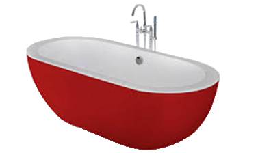 |
Un
créneau plus récent se développe :
celui des sanitaires.
Absent du marché au début des années
80, les appareils sanitaires en plastique et composites sont de plus en
plus importants.
En France, la baignoire en acrylique représente 46 % du
marché
et les éviers en matériau de synthèse
constituent le quart des pièces
installées.
L'installateur trouve son compte dans le choix
qu'il peut proposer (forme, design) et dans la
légèreté et la facilité
d'installation. |
A l'inverse des matériaux traditionnels qui sont " passifs
", les polymères peuvent être actifs,
c'est-à-dire réagir à leur
environnement.
En architecture, on imagine donc des applications qui pourraient
évoluer en fonction de la luminosité, de la
transparence, de l'humidité ou même du bruit.
Ainsi commencent à voir le jour des vitrages à
transparence variable. Certains imaginent des applications avec des
plastiques à mémoire de forme.
|
|
|
|
|
| La plasturgie automobile
française compte 200
entreprises (plus de 20 salariés) qui
réalisent près de 5,8 milliards
d'€ de chiffre d'affaire et 33 000 salariés
la composent (données 2002). |
Les plastiques
occupent une part de plus en plus importante dans l'automobile :
- l'extérieur
véhicule représente un seuil d'un peu plus de 25%
des plastiques utilisés dans un véhicule ;
- l'intérieur
véhicule représente plus de la moitié
du poids des plastiques utilisés dans un véhicule
;
- la part des plastiques atteint un seuil
d'environ 20% sous capot moteur ;
- les pièces plastiques sous
châssis représentent environ 10%.
|
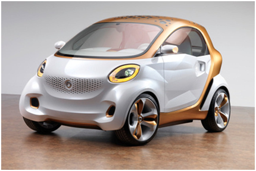 |
En partenariat étroit avec les équipementiers et
les constructeurs, les Plasturgistes proposent à l'ensemble
de la filière automobile (de la conception des
pièces à leur recyclage en fin de vie) des
solutions technologiques innovantes à des coûts
compétitifs.
Le premier critère important de ce secteur a
été au cours des 20 dernières
années la réduction du poids pour des
économies de consommation.
Après s'être substitués dans
les 20 dernières années aux matériaux
traditionnels, les plastiques se généralisent et
investissent aujourd'hui l'ensemble du véhicule.
|
|
|
|
|
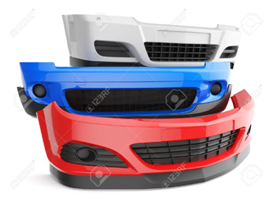 |
En
1972, la R5
inaugure le premier pare-chocs en plastique produit en grande
série.
Dans les années 1950 et 1960 se sont
développées les ailes en plastique
habillées de thermodurcissables.
Les années 1990
consacrent l'avènement des ailes en thermoplastique
injecté.
Elles permettent une très forte
personnalisation des styles, une grande audace de forme et constituent
donc une véritable signature des designers et un atout de
différenciation concurrentielle.
|
En plus de sa fonction
esthétique, le plastique est un facteur important de
sécurité.
Elasticité, absorption des
chocs, reprise de la forme initiale sans dommages apparents…
Pour toutes ces raisons, les plastiques sont
plébiscités pour la fabrication des pare-chocs et
des éléments de protection latérale.
|
|
|
|
|
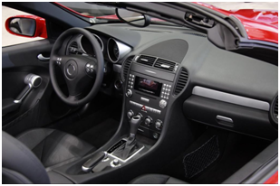 |
L'habitacle
a également bénéficié des
progrès d'allégement de poids et de
sécurité et les plastiques répondent
aux contraintes techniques spécifiques des
matériaux présents à
l'intérieur de l'habitacle : pérennité
des couleurs, stabilité dimensionnelle,
résistance aux variations potentielles de
température.
Pour renouveler l'esthétique, les designers travaillent de
plus en plus sur l'ergonomie des équipements et l'harmonie
des formes et des couleurs auxquelles vient s'ajouter la prise en
compte des diversités d'aspect de surface et de toucher.
|
|
|
|
3.3. |
Les équipements sous capot
|
|
|
|
La part
des plastiques sous capot représente environ 20 %.
En effet, ils répondent de mieux en mieux aux contraintes
spécifiques de l'environnement moteur :
résistance aux températures
élevées, atténuation des bruits mais
leur atout principal est une adaptation aux formes complexes des
pièces dans un espace étroit.
|
|
|
| 4. |
L'industrie électrique
|
|
|
Le plastique
participe au formidable développement de l'industrie
électrique et électronique.
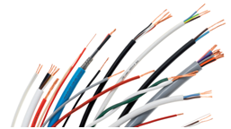 |
Dans la câblerie
il répond aux critères
essentiels de l'isolation, de
la résistance à des températures
élevées, à la stabilité
dimensionnelle
et également à une grande durée de vie.
|
Dans
l'électroménager,
les plastiques
représentent aujourd'hui 35% de
la totalité des matériaux utilisés
pour le petit électroménager et 22%
pour le gros.
On assiste là à une véritable
révolution des couleurs, des formes, de plus en plus
inspirée par le bio-design.
Là
encore, les fabricants cherchent à différencier
leurs produits grâce à
l'ergonomie, à l'esthétique, et aussi
dorénavant de la douceur du
toucher. |
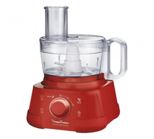 |
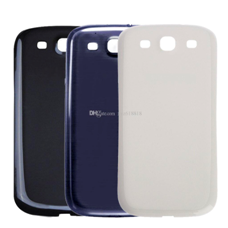 |
Bien
entendu, les matières plastiques rendent possible le
développement
des nouvelles
technologies de l'information (ère du
numérique,
internet, téléphone mobile…).
Toujours plus petit et plus
léger, capable d'intégrer de multiples fonctions
mais aussi ergonomique
et esthétique, le téléphone mobile a
imposé de telles contraintes
techniques que seules les matières plastiques ont su
apporter des
solutions (aussi bien pour les boîtiers, les antennes, les
touches que
pour les fenêtres d'affichage).
|
On développe déjà les produits de
demain avec :
- des mini supports plastiques permettant des
méga stockages
- des polymères intelligents et
conducteurs avec la naissance du transistor 100 % plastique
- et des chercheurs travaillent
déjà sur des écrans de
télévision en plastique souple.
|
|
|
|
|
Dans ce
domaine, le
plastique est devenu indispensable car il permet d'optimiser les
règles d'asepsie et de développer de nouveaux
traitements
des maladies.
On le retrouve partout : dans les matériels, les
vêtements et jusqu'aux revêtements de sols et de
murs.
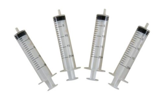 |
Leur
première
contribution à la médecine est d'avoir permis une
meilleure prévention des risques d'infection.
La
grande révolution qu'ont apportés les plastiques
au matériel médical
est la conception du " jetable " (seringues,
thermomètres, cathéters…).
|
L'autre
grande application des plastiques est celle de la médecine
substitutive qui permet de remplacer des organes malades par des
organes artificiels.
Elle englobe, par exemple, toute l'orthopédie (prothèses de main,
hanche, jambe…). |
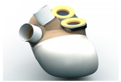 |
De nouveaux plastiques " biomatériaux " sont
développés pour le secteur médical.
Ils doivent
présenter d'exceptionnelles qualités
mécaniques et
chimiques, car ils sont en contact avec le sang et doivent rester
stables dans le temps.
La recherche sur les biomatériaux continue et laisse
prévoir pour les années à venir des
matériaux encore plus sophistiqués, mieux
acceptés
par l'organisme.
|
|
|
6. |
Les autres secteurs d'activités |
|
|
|
|
|
- Raquettes et terrains de tennis
- Skis, surfs ,planches à voile
- Rollers
- CD ROM...
|
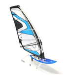 |
|
|
|
|
|
- Equipements intérieurs d'avion
- Ailes,….
|
|
|
|
|
6.3. |
Modes,
accessoires, jouets
|
|
|
- Lunettes,sacs, chaussures...
|
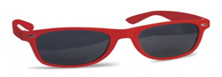 |
|
|
|
|
|
- Serres,drainage et irrigation
- Films de paillage...
|
|
|
|
|
6.5. |
Ammeublement
et décoration
|
|
|
- Revêtements sols et murs
- Equipements de la maison et du jardin
- Articles décoratifs
- Mobilier de salle de bain...
|
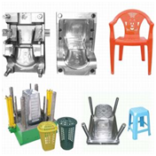 |
|
|
|
|
|
|
|
|
|
 |
|